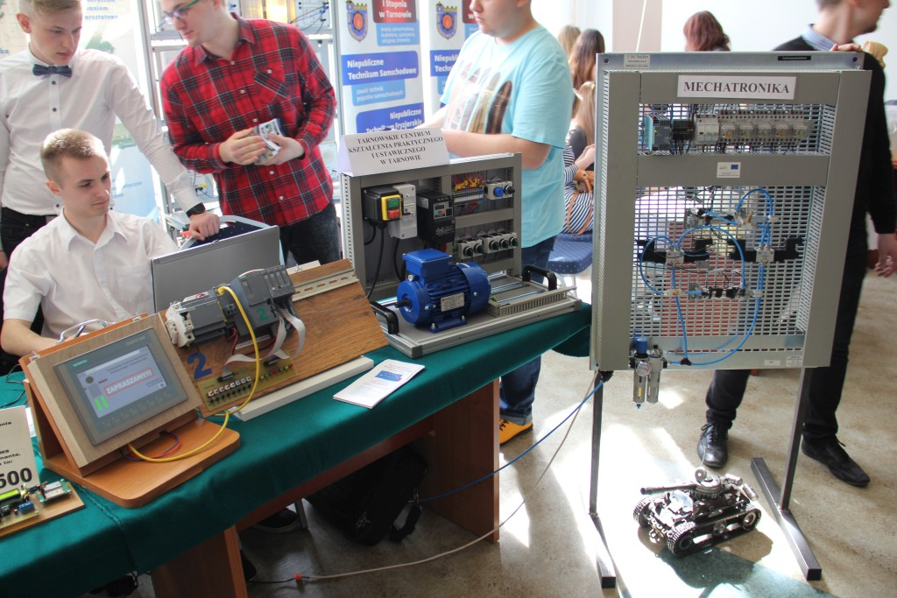
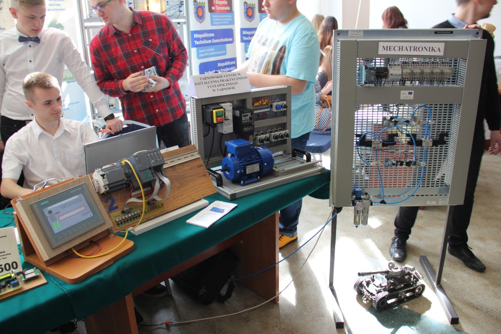
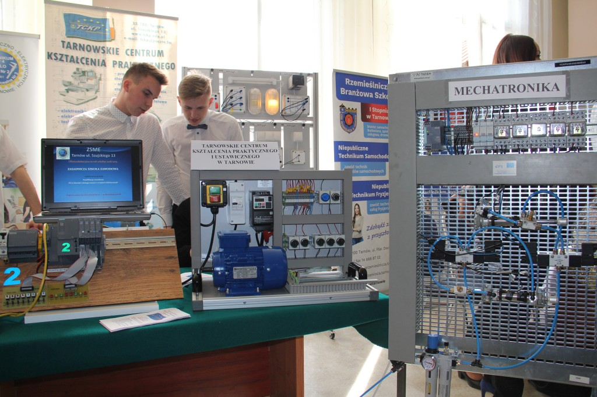
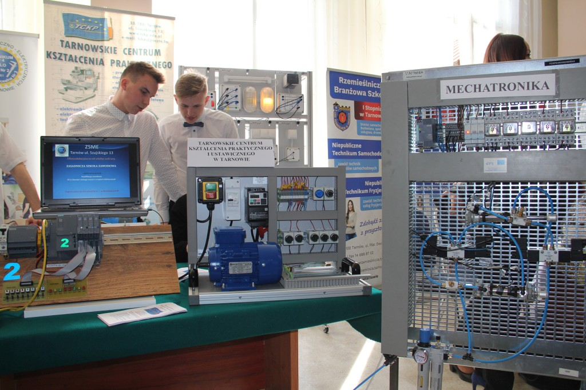
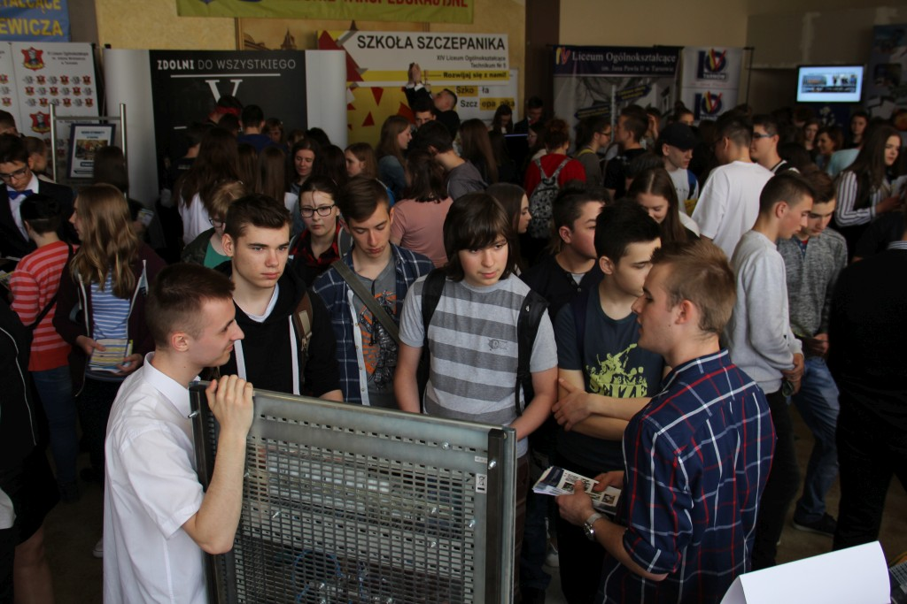
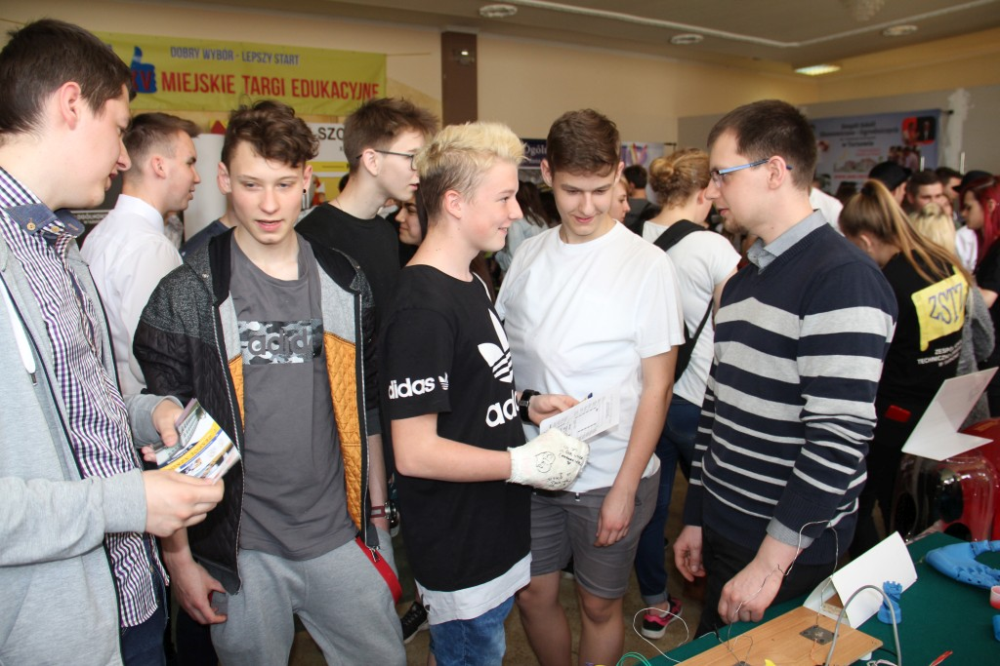
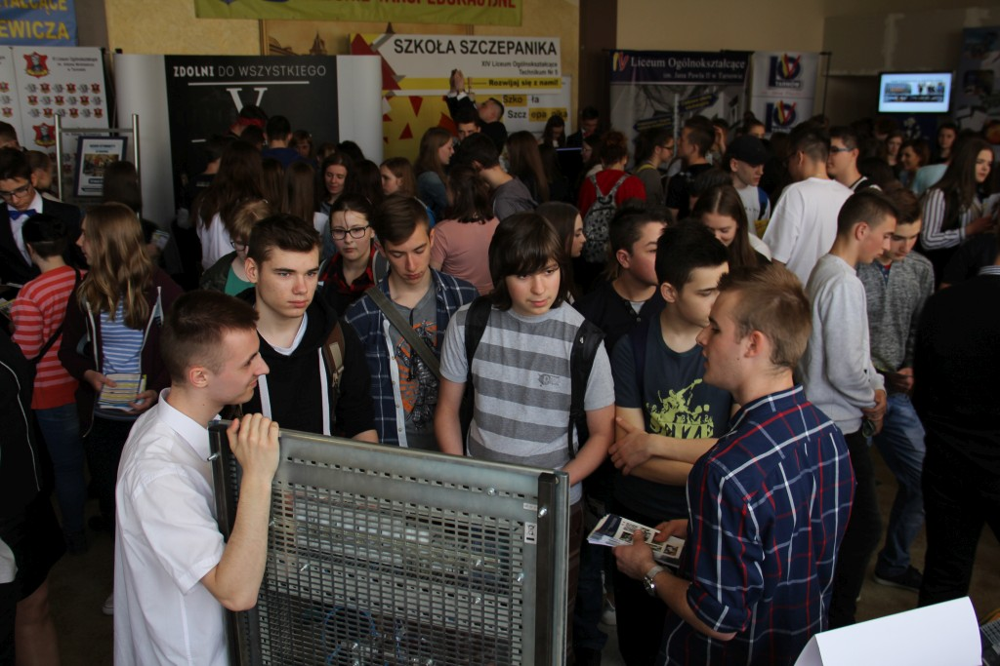
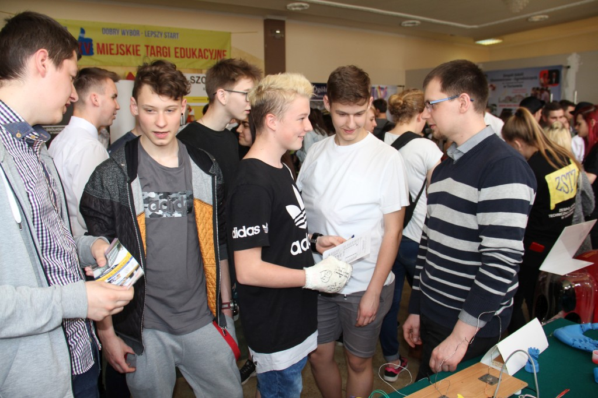

 


 




W dniach 11-12 IV 2018r w siedzibie Ochotniczych Hufców Pracy w Tarnowie przy ul. Mościckiego odbyły się XV Miejskie Targi Edukacyjne. Młodzież wraz z opiekunami biorąc udział w targach miała możliwość zaprezentowania uczniom szkół gimnazjalnych ofertę edukacyjną TCKPiU oraz ZSME związaną z kierunkami kształcenia.
Równolegle w tych dniach zorganizowano w TCKPiU dni otwarte placówki chcąc przybliżyć gimnazjalistom kierunki kształcenia, wyposażenie pracowni i warunki nauki. Bezpośrednie kontakty z uczniami odbywającymi zajęcia w TCKPiU, pytania oraz dyskusje pomogły wyjaśnić nurtujące problemy odwiedzających.